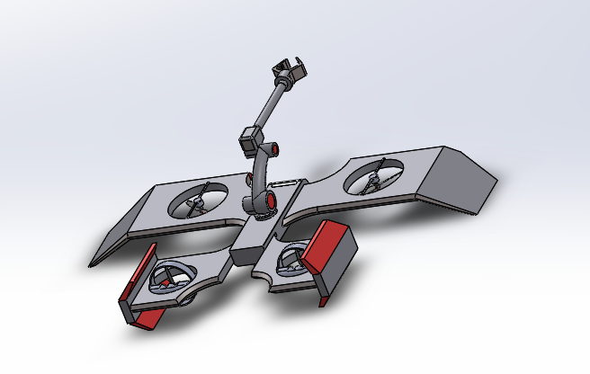
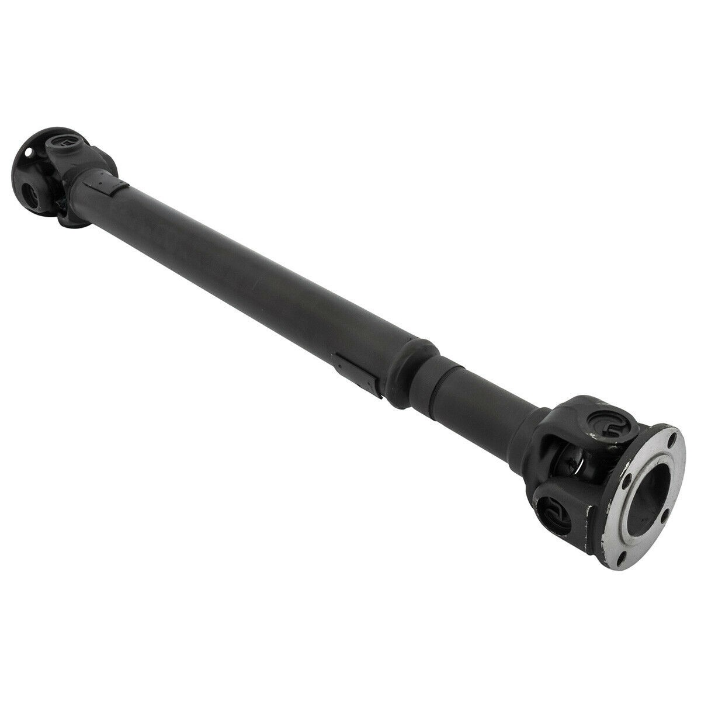

01 AéronautiqueDrone de Surveillance
Conception et prototypage d'un UAV équipé de capteurs multispectraux pour l'analyse en temps réel — aérodynamique, contrôle embarqué et acquisition de données.
Vous trouverez ci-dessous mes projets d'ingénierie, couvrant différents domaines techniques.

01 AéronautiqueConception et prototypage d'un UAV équipé de capteurs multispectraux pour l'analyse en temps réel — aérodynamique, contrôle embarqué et acquisition de données.
 02
Mécanique
02
Mécanique
Analyse structurale par éléments finis d'un composant soumis à des charges cycliques — étude de fatigue, critères de rupture et cartographie des contraintes.
 03
Rhéologie
03
Rhéologie
Caractérisation du comportement rhéologique de matériaux complexes — modélisation des fluides non-newtoniens, courbes d'écoulement et analyse viscoélastique.
Application de méthodes d'optimisation (programmation linéaire, algorithmes de graphes) à des problèmes d'ingénierie industrielle et de planification.

05 MécaniqueSélection rationnelle de matériaux et optimisation géométrique d'un arbre soumis à la torsion en utilisant les indices de performance d'Ashby.